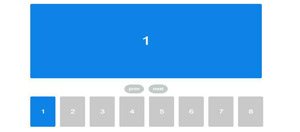

精通前端，涉猎后端
编写艺术般的代码
JavaScript
HTML&CSS
jQuery
PHP
Photoshop
对技术充满热情
求学之路上，邂逅前端之美
- 2011年9月至2015年6月在盐城师范学院攻读数字媒体技术专业，通过了英语四级考试，取得学士学位。
- ● 大学期间与同学共同完成“乐玩乐”项目网站，并成功在校园推广。
- ● 曾担任校信息中心宣传部部长，校青协宣传部干事，院宣传部部长，班宣传委员、文艺委员。
- ● 多次获得奖学金、助学金。
- 2008年9月至2011年6月在沛县第一中学就读。
沛县为大汉之源。沛县第一中学自1923年创办以来，就植根于这片沃土，紧随时代的脚步，自强不息、风雨兼程，为祖国培育出一代又一代英才。在初中时就认真学习的我立志要考取这所梦寐以求的高中，终于在预招生中成功考取沛中实验班，也因此免去了就读期间的一切费用。
曾在著名网络游戏公司任职
有大型网站架构、开发与性能优化经验
- 至今
百度在线网络技术(北京)有限公司—— Web前端工程师
1. 讨论制定Web前端开发框架；
2. 负责公司PC端、移动终端项目的web前端页面开发；
3. 负责前端页面开发和维护，并根据需求优化产品性能、用户体验、交互效果及各种主流浏览器的兼容适配工作。 - 2017/2
研究生考试（初试）
华东师范大学 软件工程 085212
101 思想政治理论——66
204 英语二——79
302 数学二——102
834 程序设计综合(含数据结构)——129
总分——376 - 2016/10
上海非码网络科技有限公司—— 研发工程师
1、配合产品经理和设计师实现前端界面，优化代码并保持良好的兼容性；
2、持续改进当前产品的前端功能，优化性能，改善访问体验；
3、负责页面的开发制作和维护，并实现复杂的JavaScript交互效果；
4、配合后端开发人员进行AJAX异步或其他交互效果实现。 - 2016/8
上海邮通科技有限公司（世纪天成）—— 前端开发工程师
1、游戏官网及活动专题重构与制作；
2、页面日常维护及更新；
3、编写系统级JavaScript组件，并提供使用说明；
4、参与或主导产品前端框架，并为之制定规范/说明文档；
5、帮助和培训其他组员相关前端知识，共同提高技能水平。 - 2015/7
丰富的项目经验
业余项目与公司项目相互促进
《反恐精英Online》官方网站
独立开发完成《反恐精英Online》官方网站首页。这是CSOL上线以来的官网第六次改版。项目中主要用到了jQuery框架。

《魔甲时代》官方网站
这是《魔甲时代》官方网站首次上线。在此项目中主要负责首页、新闻页的开发以及网站的部署与上线。

《封印者》官方网站
作为《封印者》前端工作的总负责人，针对广告轮播系统做了封装与优化，使整个站点性能大幅提升，大大提高了用户体验。
《跑跑卡丁车》官方网站
为满足《跑跑卡丁车》项目需求以及提高用户体验度，对《跑跑卡丁车》官方网站广告轮播系统做了优化升级。
Yplayer原生视频播放器插件
为了提高页面开发效率，基于Vcastr 2.2 开发的原生视频播放器插件。现在主要用于《封印者》官方网站。
Lottery原生九宫格抽奖插件
适用于跳转性抽奖效果，具体抽奖数目和样式可自行设置。特点：向下兼容至IE6，原生插件，体积小。

Ads插件(适用于各种轮播)
为摆脱jQuery插件实现轮播系统的束缚，完成了PC端原生轮播插件。主要用于广告轮播系统，向下兼容至IE 6。
Log弹出层插件
摆脱各种类库的束缚，纯原生弹出层插件。解决了多层次弹出层相重叠以及IE 6下无法盖住select组件的Bug。
敬请期待...